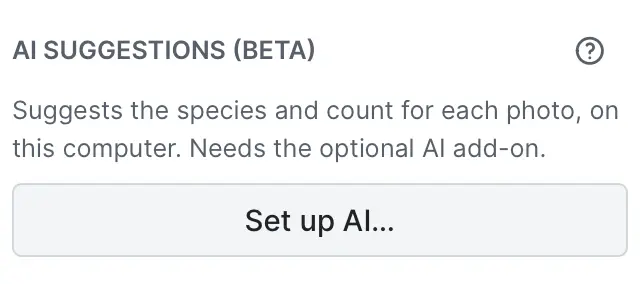
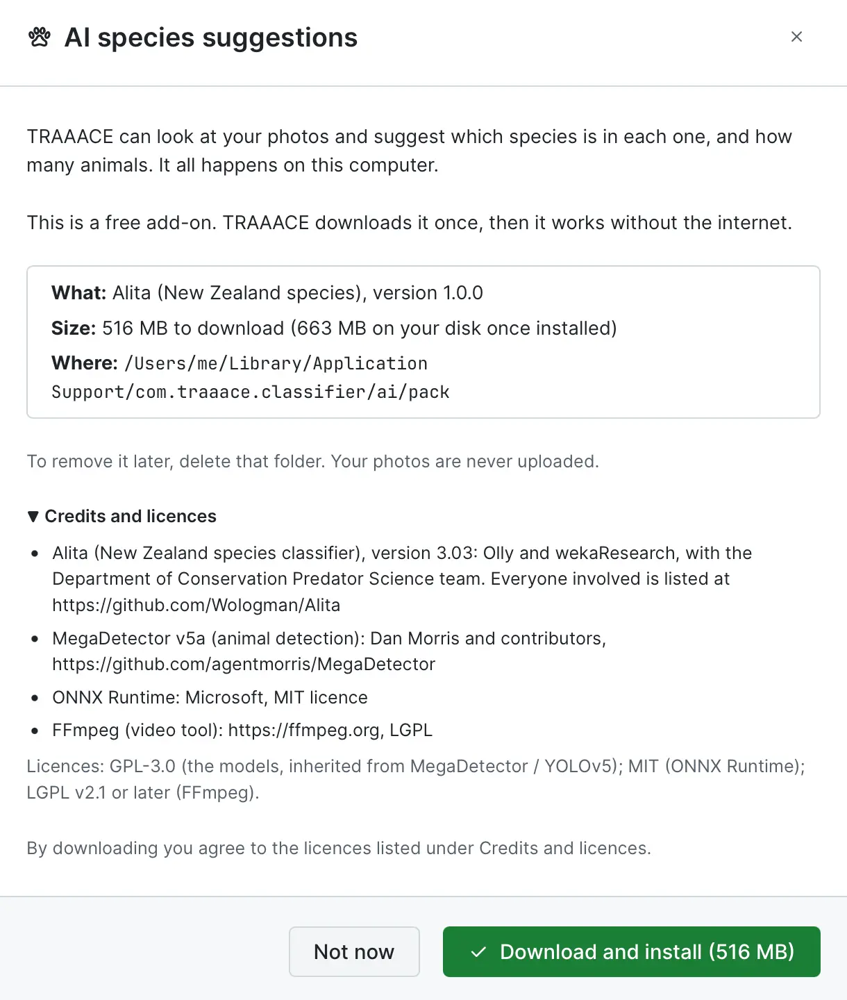
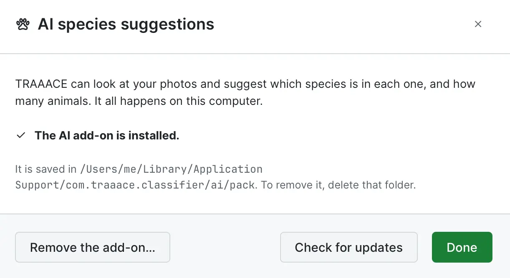

How to use TRAAACE
How to tag and export your trail camera photos and videos
The same guide is inside the app, under Guide.
Two ways to work
When TRAAACE starts you choose one. You can switch later.
Quick Classify
- Best for a single card or folder you want to tag and export now.
- Nothing is kept inside TRAAACE. Export before you close, or your tags are lost.
- To switch, close the session (the red Close button), or use Switch workspace… in Settings.
Project Library
- Best for ongoing monitoring with many folders and cameras.
- Your folders and tags are saved on this computer as you go. Close the app and carry on later.
- Adds charts (Insights), your own species keys and comments, and combined exports.
Quick Classify, step by step
From a folder of photos to a finished spreadsheet.
Getting started
- 1. Drag a folder or SD card onto the window, or click it to browse. Photos and videos are both found.
- 2. Check the Location / Site Name. It starts as the folder name, and it goes into your spreadsheet.
- 3. Before you start you can change the nine species keys and the comment shortcuts on the same screen.
- 4. Press Start Quick Classify and tag your photos (see the next section).
Finishing
- Press Export (top of the right-hand panel), or Ctrl / Cmd + E.
- Pick a folder, then which reports you want: Excel, CSV, text summary or JSON.
- Choose what happens to the photos: leave them, copy them to the export folder, or move them (moving takes them off the card).
- Tick organise by species to sort the copied photos into one folder per species.
Tagging photos
Everything can be done from the keyboard. Each tag saves straight away.
Tagging
- 1–9 tag the photo with the species on that key, then move to the next photo.
- Space tags the photo as Empty (nothing there, or a false trigger).
- / lets you type any other species name.
- + and − change the number of animals in the photo.
- Auto-Advance moves on after each tag. Use the slider beside it to wait up to 3 seconds first, so you can still add a count or a comment.
Looking closely
- ← and → move between photos without changing any tag.
- G switches between one big photo and a grid of thumbnails.
- Scroll the mouse wheel to zoom in, then drag to move around. Fit shows the whole photo again.
- Videos are paused at the start. Click the picture or the play button to watch, and use the bar to skip. Some video types can’t be played inside TRAAACE, but you can still tag them.
- Drag the edge of the right-hand panel to make it wider or narrower.
Comments, dates and clocks
Add a note to a photo, or correct a camera clock that is wrong.
Comments
- Press C to jump to the comment box.
- Use ↑ ↓ to pick a ready-made comment and Enter to add it. Or just type your own, such as “Ear tag 42”.
- Comments end up in the Comment column of your spreadsheet.
Fixing a wrong date or time
- Click the pencil beside the date above the photo.
- Set the correct date and time for that photo.
- Tick Shift all subsequent photos by the same offset to move every later photo by the same amount. This is the quick way to fix a clock that was set wrong.
Project Library: your folders
In the Projects tab, choose one Working Folder that holds a subfolder for each camera or site. TRAAACE finds them for you.
How your folders are found
- Every subfolder of the Working Folder becomes a card in the list. Camera card layouts with a
DCIMfolder are found too. - Set where exports go in Export Folder, on the same page.
- Click a folder’s site name to change its location. It is used in charts and exports.
What the labels mean
- Unclassified: nothing tagged yet.
- In Progress: some photos tagged. Open it again and carry on.
- Archived: every photo is tagged, or the photos have been moved off this computer. Your tags are kept either way.
- Exported: the folder has been exported.
- Removing a folder deletes its tags from TRAAACE. If the folder is still inside your Working Folder, it will appear again, untagged. Your photos are only deleted if you tick the box that says so.
Species & Keys (Project Library)
Choose which species sit on which keys, and keep a list of ready-made comments.
Your species keys
- The top nine species in the list are keys 1–9. Space is always Empty.
- Drag a row, or use the ▲ ▼ buttons, to move a species up or down. Put the animals you see most in the first few spots.
- Add Keymap / Species adds a species and the key or letters to press for it.
- A shortcut can be one letter or a few (for example P and PG). If two start the same way, TRAAACE waits a moment for the next key.
- Delete removes one. Reset Keys to Defaults brings back the New Zealand starter list.
Comment presets
- Add your own with Add Comment Preset, or remove ones you never use.
- The starter list is: False trigger, Multiple animals, Poor quality / blurry, Juvenile / young in frame, Injured animal, Camera moved / obstruction.
- Reset Comments returns to that list.
Insights
Charts built from the photos you have tagged. Nothing to set up.
What you can see
- Summary boxes: how many camera triggers there were, how many animals were counted, the busiest hours, and the most common species.
- Observation Activity Over Time: bars across the dates you chose. Hover a bar for its exact number.
- Species Composition: which species make up your detections.
- 24-Hour Activity Rhythm: when animals are active, shaded by night, dawn, day and dusk.
- Camera Sites: how busy each site is.
Narrowing it down
- Pick Week, Month, Year, All or Custom to choose your own start and end dates.
- Filter by site, project, species, or by photos and videos.
- Animals counts every animal. Frames counts photos or videos that had something in them.
AI suggestions (optional)
TRAAACE can suggest the species and number of animals in each photo or video. It all happens on your computer; nothing is uploaded to the cloud.
Setting up
- Click Set up AI… in the AI suggestions box on the right. TRAAACE downloads the AI add-on (about 520 MB) once, and checks it before installing.
- Works on Macs with Apple Silicon (M1 or newer), Windows and Linux. Not on Intel Macs.
- To take it off again, click ? and choose Remove the add-on….

Using it
- Open a folder and press Scan … with AI. A photo takes a few seconds on most computers, much less on an Apple Silicon Mac. Videos are checked a frame every half second, so they take much longer than photos. On an older computer you may prefer to tag videos yourself and scan only the photos.
- Each photo shows the best guess and how sure the AI is. Press Accept to tag it, or pick one of the other guesses. Accept … suggestions tags all the confident ones at once.
- The AI never tags anything by itself. Check its guesses, especially for animals that look alike, such as stoat and weasel, or rat and mouse.
- A species without its own key counts under your Bird or Other key. Your spreadsheet keeps the exact species.


Exporting, backups and importing
Get your results out, and keep a safe copy.
Exporting from a project
- Tick one or more folders on the Projects tab, then press Export Selected. Several folders can go into one combined spreadsheet.
- You can also copy the photos, either sorted into a folder per species or kept in their original folders.
- Every spreadsheet has these columns: Folder, File, Media Type, Site Name, Date, Time, Species, Animal Count, Comment.
Settings
- Backup & Restore saves everything TRAAACE has stored into one zip file, and restores it later or on another computer.
- CSV Import brings in results from an earlier TRAAACE export or your own spreadsheet. If the file came from a Mac, see Guide to uploading CSV files.
Shortcuts at a glance
Guide to uploading CSV files
If you create or edit a CSV on macOS and open it in TRAAACE on Windows or Linux, use one of these to make sure the file is clean, recognised and not upset by macOS transfer flags or line endings.
Google Sheets
Google Sheets processes the file in the cloud, which removes macOS extended attributes and quarantine flags for you.
- Open Google Sheets and create a blank sheet.
- Go to File → Import → Upload and choose your CSV.
- Check the dates. If needed, select the Date column, go to Format → Number →
Custom date and time,
and pickYYYY-MM-DD(orDD/MM/YYYY). - Go to File → Download → Comma Separated Values (.csv).
- This file can be opened directly in TRAAACE on Windows or Linux.
ONLYOFFICE Desktop
- Open your data in ONLYOFFICE.
- Go to File → Save As….
- In the format list, choose CSV (Comma Delimited) (*.csv).
- If a dialog appears, set Encoding to UTF-8 and Delimiter to Comma.
LibreOffice Calc
- Open your spreadsheet in Calc.
- Go to File → Save As….
- Choose Text CSV (.csv) and tick Edit filter settings.
- Click Save.
- In the dialog that appears:
- Character set: Unicode (UTF-8)
- Field delimiter:
,(comma) - String delimiter:
"(double quote) - Tick Save cell content as shown, so formatted dates are saved exactly as they look.
- Click OK.
MS Office Excel
Avoid the plain “CSV” option, which can use old Mac line endings.
- Go to File → Save As….
- In File Format, choose CSV UTF-8 (Comma-delimited) (.csv) or Windows Comma Separated (.csv).
- Save the file.
For developers
TRAAACE is open source under the GNU General Public License. The code lives in three repositories on GitHub.
- traaace_app – the TRAAACE app.
- traaace_ai – the AI add-on for tagging suggestions.
- traaace_web – this website and guide.